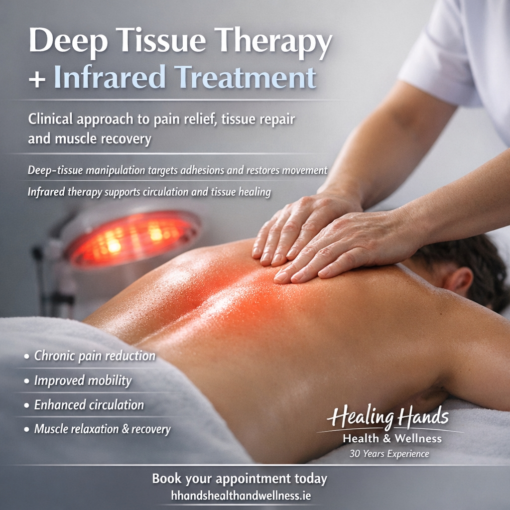

Specialist Hands-On Treatment at Healing Hands Health & Wellness, Newbridge, Co. Kildare
When it comes to relieving muscular tension, addressing restricted movement and supporting physical wellbeing, experience and an individual approach make all the difference.
At Healing Hands Health & Wellness Clinic in Newbridge, Co. Kildare, Bernadette Doyle offers specialised Deep Tissue Manipulation Massage with Infrared Heat – one of her particular areas of expertise.
With over 31 years of hands-on experience, extensive professional training and a genuine passion for helping people, Bernadette combines skilled hands-on techniques with the soothing warmth of infrared heat to provide a treatment tailored to each individual.
Deep Tissue Manipulation Massage is a specialised hands-on treatment focusing on deeper layers of muscle and connective tissue.
Unlike a conventional relaxation massage, this treatment is more targeted and is designed to address areas of muscular tightness, tension, stiffness and restricted movement.
Over time, repetitive movements, poor posture, occupational demands, sporting activities, injuries and everyday stresses can contribute to muscular tension and discomfort.
Bernadette uses carefully selected hands-on techniques to work on specific areas of concern, taking account of the individual's history, presentation and comfort throughout the session.
The treatment is never simply a one-size-fits-all massage. Each session is structured according to the person's individual needs.
One of the special features of Bernadette's treatment is the incorporation of infrared heat.
Infrared warmth provides a gentle, comforting heat that can help promote relaxation and ease feelings of muscular tightness.
When combined appropriately with hands-on deep tissue techniques, it offers an additional element of comfort to the treatment experience.
Potential benefits include:
The application of heat and the depth of massage are always considered individually. Suitability is assessed before treatment, particularly where there are medical conditions, injuries or sensitivities.
Muscular tension and physical discomfort can affect people at every stage of life.
Bernadette works with a diverse range of clients, from children to older adults, adapting her techniques and treatment approach to suit the individual, their age, circumstances and presenting needs.
Clients commonly seek treatment for concerns including:
Whether someone leads an active sporting lifestyle, spends long hours at a desk, works in a physically demanding occupation or simply wants to address areas of persistent muscular tension, an individually tailored approach is essential.
Bernadette Doyle brings more than 31 years of practical, hands-on experience to her work at Healing Hands.
Her professional background includes extensive training in sports therapy, anatomy and physiology, Swedish massage, specialised massage techniques and a wide range of complementary therapies.
She is a member of the Irish Massage Therapists Association (IMTA) and is committed to maintaining professional standards and continuing professional development.
What distinguishes Bernadette's approach is the time she takes to listen.
Before commencing treatment, she discusses the client's concerns, relevant medical history and individual requirements. This allows her to select appropriate techniques and structure the session accordingly.
Her work is professional, considered and hands-on, with the comfort, dignity and individual needs of every client remaining central to the treatment.
Some of the strongest endorsements of Bernadette's work come directly from the people who have experienced her treatments. Here are a few comments from the Healing Hands website testimonials:
Sinead, Kildare – Deep Tissue Massage with Infrared Heat
A client who had experienced a shoulder injury for several months described significant improvement following treatment, including greater freedom of movement and an improvement in everyday activities. She particularly highlighted Bernadette's expertise and knowledge, noting that treatments could be adapted to suit the individual and their complaint.
Mary, Kildare – Neck and Shoulder Treatment
After experiencing considerable neck and shoulder discomfort that affected her mobility and sleep, Mary described how a number of deep tissue massage sessions helped her regain comfort and improve her mobility.
Paul, Newbridge – Sports Injuries and Back Pain
Having experienced longstanding sports injuries affecting his shoulder and lower back, Paul described his treatment with Bernadette as professional, knowledgeable and holistic. He was delighted with the results and recommended the treatment to family and friends.
Bernadette's clients consistently highlight her caring, professional manner, practical knowledge and ability to make people feel comfortable and confident throughout their treatment.
No two people are exactly alike, and no two treatments should be either.
Bernadette believes in taking an individual approach rather than following a standard routine.
A person's age, lifestyle, medical history, physical condition and personal preferences all play an important role in deciding which techniques are appropriate.
Some clients may benefit from more focused deep tissue work, while others require a gentler approach or a combination of techniques.
Treatments are adjusted throughout the session, with communication and client comfort always taking priority.
For children and older adults, particular care is taken to ensure that any treatment offered is appropriate, gentle and suitable for their individual circumstances. Parental or guardian involvement and consent are arranged where appropriate.
Deep tissue massage is not suitable for every condition. Where necessary, Bernadette will recommend medical advice before proceeding.
Whether you are experiencing muscular tension, stiffness, work-related discomfort or simply feel that your body needs some attention, professional hands-on treatment may be worth considering.
At Healing Hands Health & Wellness Clinic, Bernadette combines over 31 years of experience with a personalised, caring and professional approach.
Her aim is simple: to listen, assess and provide a treatment that is appropriate to the person sitting in front of her.
You are not just booking a massage. You are putting your wellbeing into experienced hands.
WhatsApp: 086 389 3413
Emails: hhandshealthandwellness@gmail.com - liveserenitysounds@gmail.com